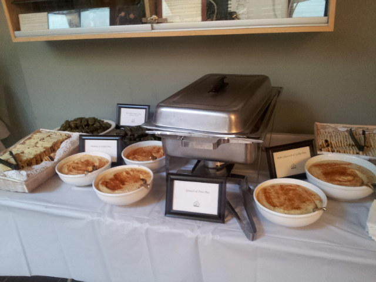

Apr 6, 2014 · 2 minute read · Comments hikingFrick ParkIron Grate Trail
Abby and I did a leisurely hike in Frick Park near home, exploring a trail that I don’t usually run on, the Iron Grate Trail, because it is a favorite trail for mountain bikers, and therefore tends to have muddy ruts that are not so pleasant for pedestrians, and also someone on a mountain bike could always come out of nowhere. But we were careful to keep our eyes and ears open, and share the trail, yielding to mountain bikers when perceiving them coming along.
Read On →
By coincidence, it is now Jazz Appreciation Month, which is observed every April. So it is fitting that I just completed the free MOOC from edX on “Jazz Appreciation”, UT.8.01X, through UT Austin, taught by Jeffrey Hellmer.
This is my third year of celebrating the birthday of Johann Sebastian Bach. I did this in 2012 and in 2013.
The first year, I consciously chose to play some of his music rather than read about it (or about his life). The second year, I played some more of his music, on flute.
This year, I did something different.
First of all, I learned that I had gotten his birthday “wrong” in the past two years! This year I decided to celebrate the actual birthday (in terms of passing of time) rather than his birth date (which was March 21 according to the old Julian calendar). A minor detail, but symbolic of my intention.
Abby and I went to a French potluck dance party at Lisa’s, the first one we’ve attended together in ten months (although I went to one without Abby half a year ago when she was out of town).
It was a wonderful experience, one that we’ve missed for two months, since we have not gone out to a party with friends since Abby got a new job and we’ve had to adapt to that big change in our lives.
Although we still had to leave early, I was reminded of what I really enjoy in life, deep down: nothing fancy, just getting together and having fun and being creative.
This evening, right after work, I attended an event called “Time to Taste the World”, organized by Carnegie Mellon University’s Modern Languages Student Advisory Council for the Department of Modern Languages. It was an informal event featuring some food selections followed by a German film that I opted not to watch, since I needed to go home.
There were three tables of food, one for “Asian”, another for “Mediterranean”, and another for “European”. Obviously, only a very tiny fraction of the world was actually represented in this event, and the selections were mostly not very exciting, but it was interesting and even jarring going from one table to another.

Mediterranean
Asian
European
Note that standard CMU catering cookies were also provided.
I did try a bit of everything, including stuff I less frequently encounter. Unexpectedly, the experience of hopping from one table to another, and sampling every single item, led me to reflect on how unfamiliar some of these items were to me until later in life, and how my taste in food has expanded considerably in my 30s and 40s.
Two weeks ago, I returned to attending Steel City Ukuleles meetings after almost two months off, and I attended again tonight; my habit since starting out last summer has been to attend the regular first and third Wednesday meetings in Regent Square. Although I have been thinking of cutting back to attending once a month instead of twice a month, I was intrigued by the rather ambitious playlist Adam created for this week, so I couldn’t resist going, even though it meant conflicting with a newly revived regular French dance music jam that I haven’t attended in half a year.
I forgot to mention in my post about last month’s Pittsburgh Recorder Society’s meeting that Fred has started recording our sessions; he’s set up a tripod and an audio recorder. I kind of didn’t pay attention because it was not emphasized and nobody talked much about it.